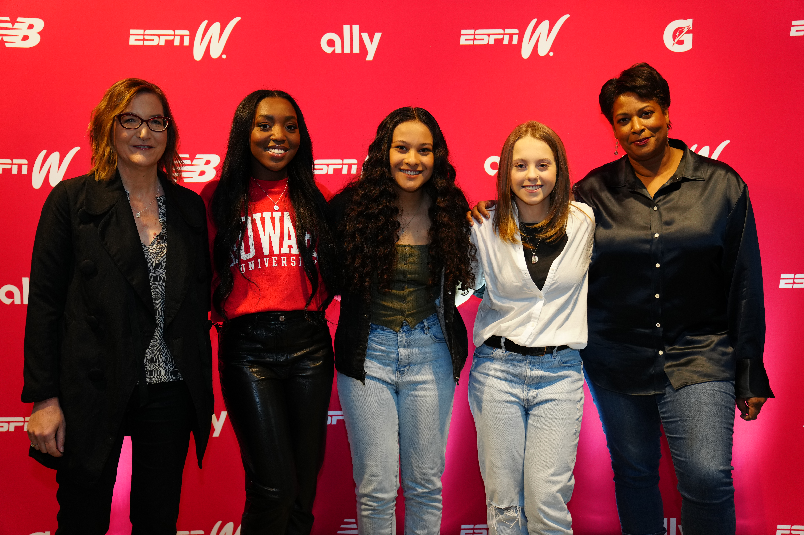
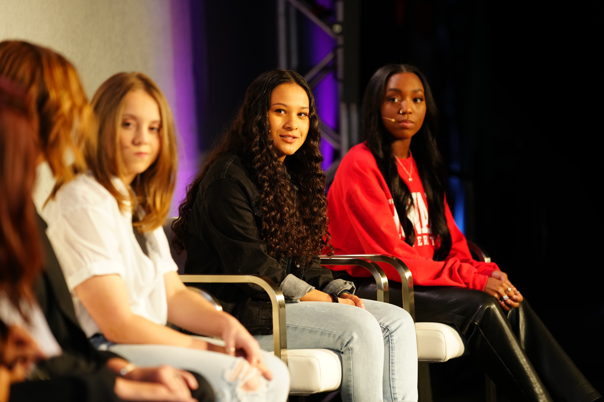

Araceli Biosciences
Data Science Intern
Built an AI-assisted platform to help scientists design fluorescence microscopy acquisition protocols and interpret instrument QC results.
DATA · AI · DESIGN
I'm Elisabeth, a data science graduate interested in the intersection of technology, data, and human-centered design.
WORK
Data Science Intern
Built an AI-assisted platform to help scientists design fluorescence microscopy acquisition protocols and interpret instrument QC results.
Search Engine Optimization Intern
Analyzed large-scale datasets, researched Share of Voice metrics, and used machine learning and vector embeddings to uncover optimization opportunities.
Peer Training Coordinator · Tutor
Led weekly training for peer tutors while developing tools to streamline scheduling and supporting students in calculus and computer science.
PROJECT
01
UNDERGRADUATE HONORS THESIS · DATA SCIENCE
How geographically concentrated are NFL fan bases, and how does fan sentiment change in response to game outcomes?
I analyzed geotagged Twitter data to measure the geographic dispersion of NFL fan bases, quantify team engagement, and examine emotional reactions to wins and losses.
Read the full projectABOUT
I recently graduated from the University of Vermont with a B.S. in Data Science and a minor in Mathematics.
I'm interested in building technology that is not only technically interesting, but genuinely useful. My work has taken me from machine learning and geospatial analysis to AI-assisted scientific tools and data visualization.
I especially enjoy taking complicated technical problems and turning them into something people can actually understand and use.
EDUCATION
University of Vermont
B.S. Data Science
Minor in Mathematics
TOOLS
Python · SQL · R · Java
C++ · JavaScript · FastAPI
Docker · Git · Snowflake
INTERESTS
AI · Machine Learning
Data Visualization · Design
BEYOND DATA
In addition to my technical work, I filed and won a Title IX lawsuit seeking equal athletic facilities for men and women in Portland Public Schools. The case was later featured in ESPN's documentary series 37 Words.
Watch on ESPN+

CONTACT
Interested in working together or just want to say hello?